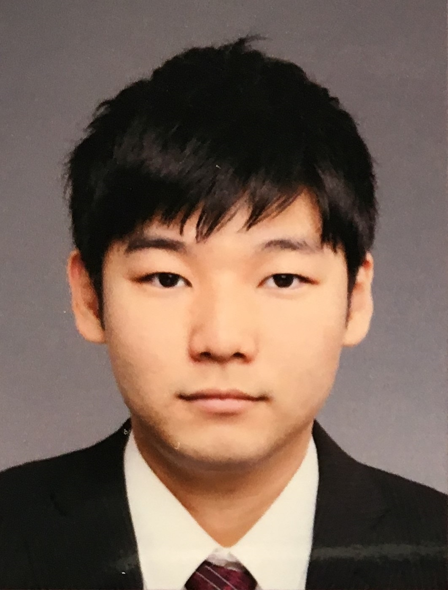
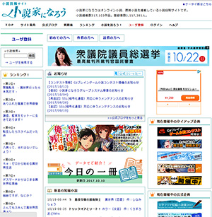
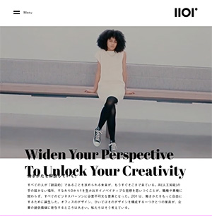
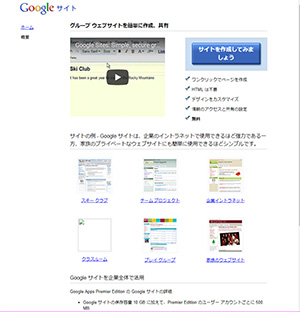

デジハリ文芸サークル
デジハリ文芸サークルに所属し、年に2，3冊の冊子を作成しています！
普段の活動では文章力強化のために、原稿用紙を複数人で回してひとつの短編を作るリレー小説、三つのお題を決めて即興で短編を執筆する三大噺などを行っています。

氏名：中村政哉
生年月日:西暦1996年3月14日生まれ
スキル：C++,java,mySQL,PHP,excel,word,powerpoint,HTML,CSS
血液型：Ｏ型
デジハリ文芸サークル所属（元サークル長）
ゲーム（特にＲＰＧ）と本をこよなく愛す酔いどれ。趣味は水泳、読書、飲酒。
甲州のワイナリーで赤ワインを浴びるように飲むという野望を抱いている。
2014年3月 越谷総合技術高等学校 情報技術科 卒業
同4月にデジタルハリウッド大学 デジタルコミュニケーション学部 デジタルコンテンツ学科に入学。
ゲーム制作のためにプログラミング、シナリオ制作、マルチメディアコンテンツについて学び、米光ゼミに所属。
デジハリ文芸サークルに所属し、年に2，3冊の冊子を作成しています！
普段の活動では文章力強化のために、原稿用紙を複数人で回してひとつの短編を作るリレー小説、三つのお題を決めて即興で短編を執筆する三大噺などを行っています。
文字校正、飲食店、接骨院、大学図書館の受付を同時に掛け持ちして働く。

小説投稿サイト「小説家になろう」は自分で執筆した小説を簡単に掲載することができるサイトです。定期的にコンテストなども開催しており、コンテストで優秀賞に選ばれたり掲載した小説の人気が出ると書籍化されたりすることがあります。”なろう作家”と呼ばれる作家さんも多くいらっしゃいます。デジハリ文芸サークルの投稿作品もありますので興味がある方は是非！

DRAFT社の『201°』はオフィス家具ブランドです。従来の日本家具から少しだけ発想を変えて作るということから人間の視界と言われる200°から１°だけ足した『201°』という名をつけたそうです。デザインやアニメーションはシンプルながらこだわりが垣間見えるWebサイトだと個人的に思います。初見の感想は”ぬるぬる動いてすごい。”

Googleサイトはhtml不要でウェブサイトを作成することができるサイトです。クラブや企業イントラネットにも使用できる一方、家族用のサイトを作成できるなど、幅広い用途に使用できます。